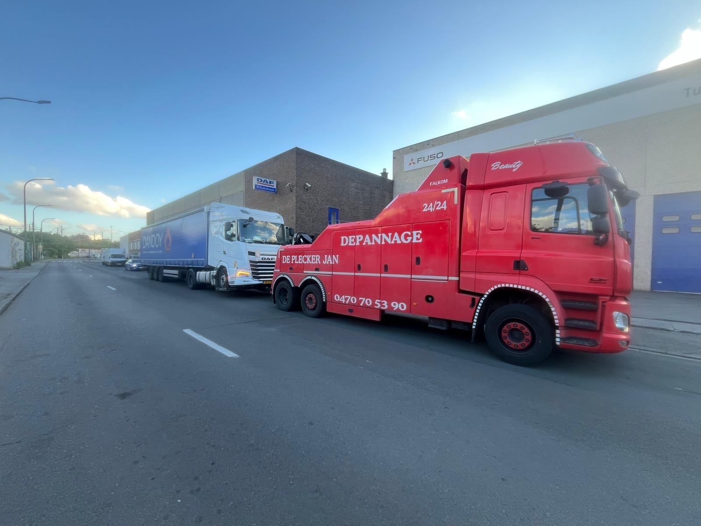

Camion en panne dans Bruxelles-Capitale, sur le Ring ou dans un zoning de la périphérie ? On dépanne tous les poids lourds 24/7. Partenaire des flottes de transport, livraison et chantier bruxelloises.
★ 4,7/5 Google·Partenaire Touring Secours·Véhicule baliseur autoroute·24/7 jours fériés inclus

"Camion en panne sur le Ring un dimanche soir. Ils sont arrives en 40 minutes. Pro."
"Utilitaire bloque dans le zoning. Equipe efficace, devis clair au tel. Recommande."
"Service serieux pour les poids lourds. Sangles pro, materiel adapte."
Vous roulez sur le Ring R0 en heure de pointe, un voyant moteur s'allume et le couple chute. Ou bien votre semi attend sa décharge devant un quai du Port de Bruxelles et le démarreur lâche au moment du départ. Ou encore l'autocar de tourisme que vous conduisez vers la Grand-Place fait sauter une durite près de l'avenue de la Toison d'Or. Chaque cas est différent — ce qui ne change pas, c'est qu'un poids lourd à l'arrêt à Bruxelles, ça crée vite des problèmes. Appelez le 0488 04 87 33. Un humain décroche, prend votre adresse exacte et l'estimation de PTAC.
On intervient sur l'ensemble du réseau routier qui dessert Bruxelles-Capitale :
Si votre camion est immobilisé devant un entrepôt ou sur un parking d'entreprise, on connaît probablement le site. Quelques exemples :
Notre clientèle camion à Bruxelles est très variée. Quelques profils types :
On a le matériel adapté pour tous les segments :
Si votre camion diesel ancien (Euro 4 et antérieur pour les poids lourds, calendrier qui se durcit chaque année) est tombé en panne dans la Low Emission Zone, on vient le récupérer. Notre matériel est conforme LEZ. On vous sort de la zone, point. La conformité de votre véhicule, c'est entre vous et la commune — pas entre vous et nous.
Pour un dépannage camion, le tarif dépend du PTAC, de la distance et du type d'intervention. On donne le prix au téléphone avant déplacement. Pas de majoration nuit ou week-end. Facturation pro avec TVA. Partenaire Touring Secours pour les contrats d'assistance flotte. Sur demande, contrat de prise en charge prioritaire avec engagement de délai pour les flottes de plus de 5 véhicules.
Cette page se concentre sur les interventions dans toute Bruxelles-Capitale et sur ses autoroutes. Si votre camion est en panne plus précisément à Anderlecht ou dans le zoning autour, voir notre page dédiée dépannage camion Anderlecht. Et pour les services généralistes sur le reste du parc auto (voiture, moto, batterie, pneus), passez par notre service de dépannage 24/7 à Bruxelles.
Oui, les 19 communes de Bruxelles-Capitale plus toute la périphérie. Sur Bruxelles-Ville, Schaerbeek, Anderlecht, Etterbeek, Ixelles, on intervient en 30 à 60 minutes selon le trafic. Sur le Ring R0, en général moins de 45 minutes — on connaît tous les accès et bretelles.
Oui. Si votre camion diesel ancien est tombé en panne dans la Low Emission Zone, on vient le récupérer. Le matériel ABD est conforme LEZ. Notre rôle, c'est de sortir votre véhicule de la zone — pas de juger sa conformité.
Oui. Autocars de tourisme, minibus de transfert, bus de location événementiel. Selon le PTAC et le contexte (panne en centre-ville historique, sur autoroute, en zoning), on adapte le matériel : bras de levage, plateau renforcé, baliseur autoroute.
Généralement 30 à 45 minutes. On part de Schepdaal, à 5 minutes de la sortie 14 du Ring. Selon le trafic et l'heure de la journée — moins en nuit, plus en heure de pointe. On vous donne une estimation honnête au téléphone, pas une promesse irréaliste.
Oui. Sociétés de transport, livraison urbaine (e-commerce, food delivery pro), entreprises de construction, location utilitaires. Facturation pro avec TVA, possibilité de contrat de prise en charge prioritaire pour flottes. Partenaire Touring Secours pour les contrats d'assistance.
Oui : zoning de Forest, Drogenbos, Anderlecht-Industriel, Schaerbeek-Formation, Cargovil à Vilvorde. On connaît les accès, les hauteurs de porte, les sens uniques pour poids lourds. Pas de surprise à l'arrivée.
Besoin d'un dépannage camion à Bruxelles tout de suite ? Appelez le 0488 04 87 33. On est là 24h/24, 7j/7, sur tout le Ring et toutes les communes.
Un humain décroche, jour et nuit. Prix annoncé au téléphone selon votre PTAC et la distance. Facture pro pour votre flotte. Pour explorer tous nos services, voir remorquage et dépannage à Bruxelles.
0488 04 87 3324h/24 — 7j/7 — Ring R0, autoroutes, zonings, Bruxelles-Capitale